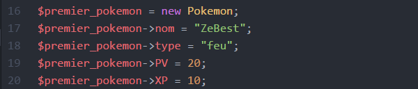
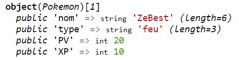

Bien ! Nous avons un premier objet, mais dont les attributs sont "null".
Nous allons donc le manipuler grâce au symbole "->".
On l'utilse pour faire appel/accéder à un attribut ou une fonction d'un objet.
On peut par exemple attribuer une valeur pour chaque attribut :

Un nouveau var_dump nous donnera :

Pour appeler une fonction, on écrira :